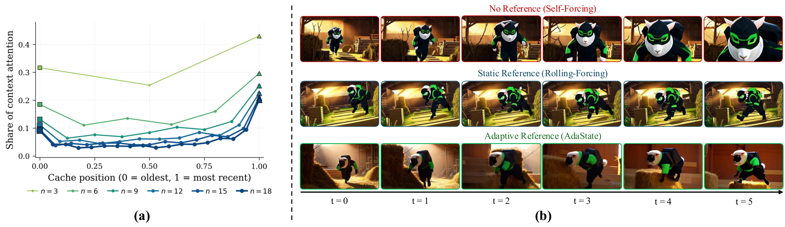
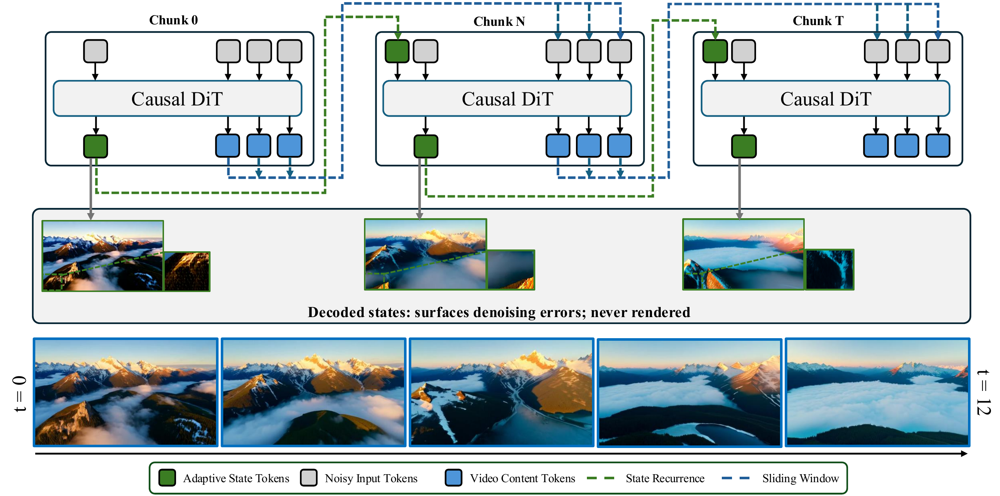

Replace the frozen first-frame anchor with an adaptive state that the model denoises alongside each chunk — unlocking streaming video generation with richer dynamics without sacrificing coherence.
Causal video diffusion models concentrate attention at the first and most recent cache positions. The first position acts as a privileged static anchor that locks the scene's composition; the bias persists across expanding window size n.

Figure. (a) Share of context attention vs. cache position for various window sizes n: attention spikes at the first (anchor) and most recent positions — a pattern preserved across n. (b) Consequences across reference strategies: No Reference (Self-Forcing) enables change while staying dependent on the initial composition, Static Reference (Rolling-Forcing) freezes the scene, while Adaptive Reference (AdaState) sustains motion and coherence.
AdaState reserves a hidden state slot in the KV cache that the causal DiT denoises alongside content at every chunk. The state gets updated within the cache as the rollout progresses.

Figure. AdaState reserves an adaptive state slot in the KV cache that the causal DiT denoises alongside video content tokens at every chunk. The state is never rendered: it propagates as a recurrence (green dashed) while the sliding window (blue dashed) carries recent content forward. Decoded states surface denoising errors but are never emitted as frames.
A latent slot is reserved inside the KV cache. The model denoises it alongside content at every chunk but never emits it as a generated frame.
A static first-frame anchor freezes the reference at t0 — a growing discontinuity with the present scene. AdaState's anchor instead changes continuously across chunks, staying in step with where the rollout actually is.
The decoded state surfaces and amplifies the model's denoising errors (as seen in zoomed patches), feeding them back as supervision on the effective position. AdaState learns to correct against them at training time.
Switch between within-horizon (5s, 21 latent frames) and beyond-horizon (12s, 51 latent frames).
"An extreme close-up shot of an ant emerging from its nest… As the camera pulls back, we see a picturesque neighborhood beyond the hill."
"A dramatic exploration scene in a dark, mysterious cave, where an intrepid explorer lumbers forward, flashlight beam casting shadows on ancient murals…"
"A vibrant manga-style illustration of a sheep dressed as a ninja, stealthily navigating through a barnyard obstacle course…"
"A cinematic scene in the style of a fantasy drama, depicting a person walking through a serene field filled with floating lanterns…"
"An adorable kangaroo in a green dress and sun hat taking a leisurely stroll in Johannesburg during a breathtaking sunset…"
"A realistic photo of a llama wearing colorful pajamas dancing energetically on a stage under vibrant disco lighting…"
"A movie trailer in a classic cinematic style, featuring the adventurous journey of a 30-year-old space man wearing a vibrant red wool knitted motorcycle helmet…"
"A dynamic and lively tour through an art gallery, showcasing a diverse array of beautiful works in various styles…"
"A cinematic 35mm film-style extreme close-up of a gray-haired man in his 60s, deeply engrossed in thought at a Parisian café…"
"An aerial view of Santorini during the blue hour, capturing white Cycladic buildings with blue domes against the twilight sky…"
"A highly detailed close-up shot focusing on dew droplets glistening on the delicate petals of a blue rose…"
"A stylish woman in a black leather jacket and red dress strolls down a neon-lit Tokyo street, the wet pavement reflecting vibrant signs…"
Prompt"A dynamic FPV aerial view of a vast mountain range at sunrise, snow-capped peaks rising above a sea of soft low clouds…"
Prompt"A sweeping aerial drone shot above dramatic coastal cliffs at golden hour, deep blue waves crashing against the rocks below and sending up white spray…"
Prompt"A dynamic FPV aerial flight through a vibrant underwater coral city, where colorful corals line the streets and ancient stone ruins rise from the seabed…"
State size & cache window, and the horizon weight α that re-balances within- vs. beyond-horizon supervision.
Prompt"An astronaut running through a narrow alley in Rio de Janeiro… helmet reflects sunlight…"
Prompt"An old man in blue jeans and a white T-shirt takes a stroll in Mumbai during a winter storm…"
Prompt (5s)"A handheld shot following a young child running through a field of tall grass…"
Prompt (30s)"A dynamic FPV aerial flight above Niagara Falls, the camera racing toward the thundering edge…"